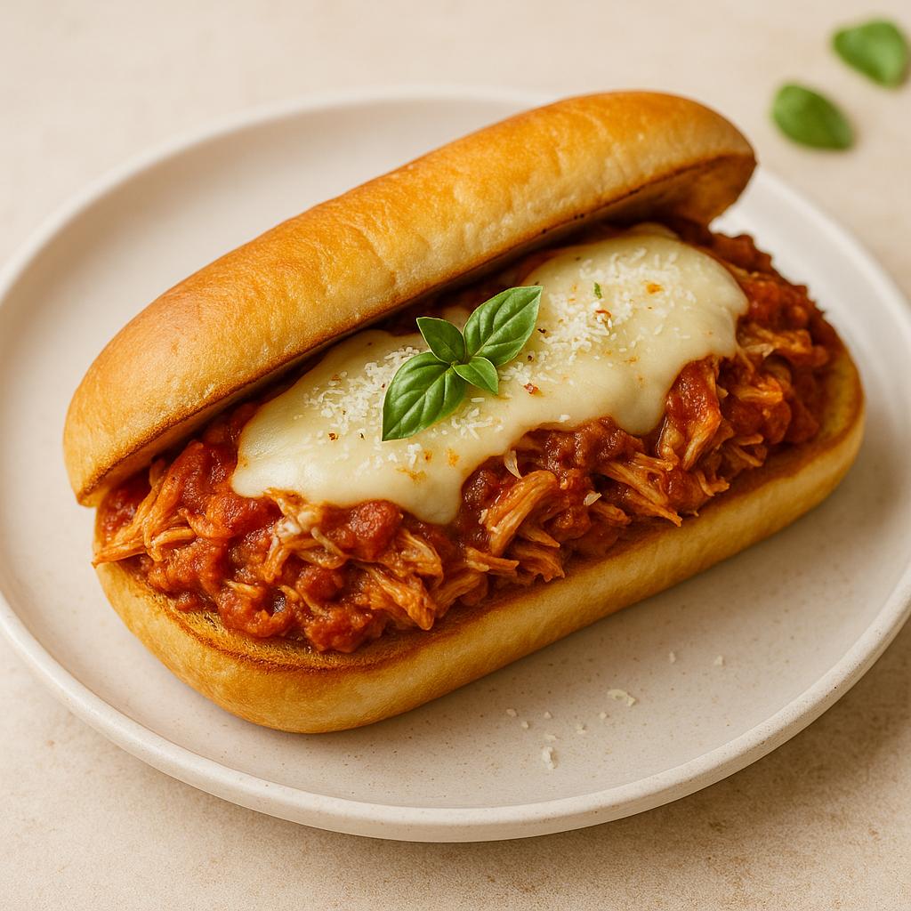

Crockpot Marinara Chicken Sandwich
Developed by Forrest White & Cook Anything Kitchen
Ingredients
Chicken
- 2 lbs chicken breast
- Salt & pepper, to taste
- 1 tsp onion powder
- 1–2 tsp Italian seasoning
- ¼–½ tsp red pepper flakes
- 1–2 tbsp jarred minced garlic
- 24 oz marinara sauce
For Serving
- Sub rolls
- 4–8 slices provolone cheese
- Shredded Parmesan
- Fresh basil (optional)
Garlic Toasted Rolls
- 3 tbsp softened butter
- ¼ tsp salt
- ½–1 tsp garlic powder
Instructions
- Season chicken breasts with salt, pepper, onion powder, Italian seasoning, and red pepper flakes.
- Place chicken in the slow cooker and spoon minced garlic over the top.
- Pour marinara sauce over the chicken.
- Cook on low for 6–7 hours or high for 3–4 hours, until chicken easily shreds.
- Shred chicken with two forks, return to crockpot, and let it absorb flavor for 10–15 minutes.
- Make garlic-butter rolls by mixing softened butter, salt, and garlic powder. Spread on rolls, then toast until golden.
- Assemble sandwiches with shredded marinara chicken, provolone slices, and shredded Parmesan. Broil 1–2 minutes if desired.
Notes
- Add sautéed onions or bell peppers for extra flavor and texture.
- For a chicken-parm twist, add extra Parmesan and broil with a sprinkle of Italian breadcrumbs.
- If the marinara is thin, stir in 1–2 tbsp tomato paste near the end.
- Great for meal prep—reheats perfectly and stays juicy.
Nutritional Information
Serving Size: 1 sandwich
Calories: 520
Fat: 18 g
Carbohydrates: 46 g
Protein: 45 g